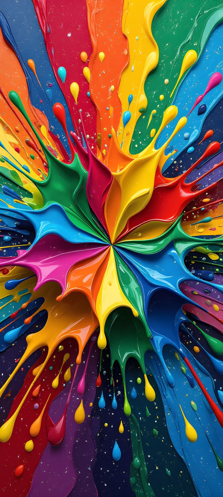
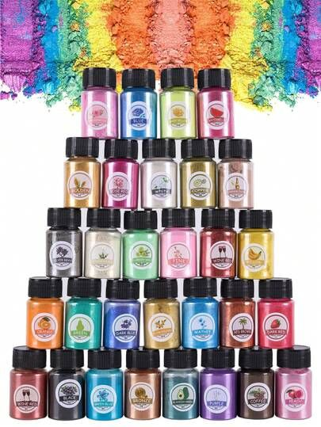

The Complete Guide to Colour
Inspiration for Resin Art
From reading the colour wheel to building seasonal palettes, understanding undertones, and pairing pigments like a professional — everything you need to make every pour a colour triumph.

Understanding the Colour Wheel
The colour wheel is the single most powerful tool in every artist's kit. Understanding how colours relate to each other lets you build palettes that feel balanced, intentional, and emotionally resonant — never accidental.
-
Primary colours — Red, yellow, and blue are the building blocks. All other colours are derived from mixing these three.
-
Complementary pairs — Colours directly opposite each other (purple & yellow, teal & orange) create maximum contrast and visual energy.
-
Analogous harmony — Three to five colours sitting side by side (blue, blue-green, green) create serene, flowing compositions perfect for ocean pours.
-
Triadic balance — Three colours equally spaced (red, blue, yellow) produce vibrant, dynamic pieces with natural visual balance.
-
Warm vs. cool temperature — Warm colours (red, orange, amber) advance visually. Cool colours (blue, teal, violet) recede. Use this to create depth in layered resin pours.
-
Tints, tones & shades — Adding white creates a tint (pastel), grey creates a tone (muted), and black creates a shade (deep). All three are available in resin without changing cure chemistry.
Signature Colour Palettes for Resin
Six ready-to-use palette collections curated specifically for resin art — from ocean depths to golden desert sunsets.
Seasonal Colour Inspiration
Each season offers a unique emotional palette. Align your resin creations with the colours of the natural world to produce work that feels deeply resonant.
Spring
Light, airy, and optimistic. Spring palettes feature fresh pastels — mint, blush, lilac, and lemon — often combined with white pearl and silver mica for that dewy, just-rained freshness.
- Pair mint with blush for bridal pieces
- Add holographic glitter for morning-dew effect
- Layer lemon over white base for soft glow
Summer
Bold, saturated, and energetic. Summer demands vibrant teals, hot corals, and sunshine yellows. Think ocean waves, tropical birds, and golden sand — maximum colour impact.
- Combine teal + orange for coastal art
- Use fluorescent pigments for UV glow pieces
- Alcohol ink blooms work perfectly in summer hues
Autumn
Rich, warm, and deeply textured. Autumn calls for burnt siennas, deep ambers, and crimson reds. Gold leaf accents on dark resin backgrounds create the visual depth of autumn foliage.
- Layer burnt sienna over dark base for depth
- Gold copper leaf pairs beautifully with crimson
- Try pressed maple leaves as botanical inclusions
Winter
Cool, elegant, and mysterious. Winter palettes combine midnight blues, silver, and stark whites. Add aurora-green or violet accents and holographic silver powder for a northern-lights effect.
- Silver pearl creates ice and frost textures
- Deep navy + white = perfect icescape pour
- Glow powder mimics aurora borealis in dark display

Pigment Pairing Rules
Not all pigments behave the same way in resin. These pairing principles help you plan colour combinations that stay beautiful through the full curing cycle.
Complementary Contrast
Pair purple + yellow or teal + orange for bold, high-energy pieces. Keep one colour dominant (70%) and the accent recessive (30%) to avoid visual noise. Use the smaller portion as poured dots or swipe lines.
Analogous Flow
Adjacent colours on the wheel (blue, teal, cyan) blend into each other smoothly without creating muddy brown. These palettes are ideal for fluid pours and ocean-wave effects that need seamless transitions.
Triadic Drama
Three equally-spaced colours (purple, teal-green, amber) create maximum vibrancy. Always add white or black as a neutral buffer between the three — this prevents the palette from looking chaotic.
Neutral Anchoring
Every palette benefits from at least one neutral — white, cream, grey, or black. Neutrals separate pigment sections, prevent bleed-muddying, and give the eye a place to rest in complex multi-colour compositions.
Split Complementary
Instead of one direct complement, use the two colours on either side of it. For purple, use yellow-green and yellow-orange instead of pure yellow. This delivers contrast without the harshness of a direct complementary clash.
Tonal Layering
Use multiple tints and shades of a single hue (from near-white to near-black in one colour family). This monochromatic approach gives extraordinary depth to resin pours and is particularly stunning in geode and fluid art.
Colour Psychology in Art
Colour is one of the most powerful emotional tools in art. Before you plan a palette, consider the feeling you want the piece to evoke — the buyer's emotional response should guide every colour choice.

Dark vs. Light Base: How to Choose
The base colour (or background layer) of a resin piece fundamentally determines how every subsequent colour layer looks. Getting this decision right is critical.
Dark Base
Dark backgrounds (black, midnight blue, deep charcoal) make pigments appear significantly more vivid and luminous. Mica powders glow with an almost backlit quality. Gold and silver leaf become dramatic focal points.
- ✓ Maximum vibrancy for metallics and mica
- ✓ Gold leaf has 10× more visual impact
- ✓ Glow-in-the-dark powder works only on dark base
- ✓ Best for geode art and galaxy pours
- ✗ Pastels lose their lightness over dark base
- ✗ Requires opaque first pour layer
Light Base
White and cream bases allow transparent and translucent pigments to sing. Ocean blues become dreamy and luminous. Pastels remain soft and delicate. Alcohol inks bloom with their full range of transparency.
- ✓ Pastels and soft tones maintain true colour
- ✓ Transparent pigments show maximum depth
- ✓ Best for ocean, botanical, and floral art
- ✓ Spring and summer palettes shine on white
- ✗ Metallics less dramatic than on dark base
- ✗ Ink bleeds more — harder to control edges
Studio Tip: When in doubt, test a small sample board with both a dark and a light base before committing your full pigment pour. The same colours can look entirely different on each base — this 30-minute test saves hours of frustration.